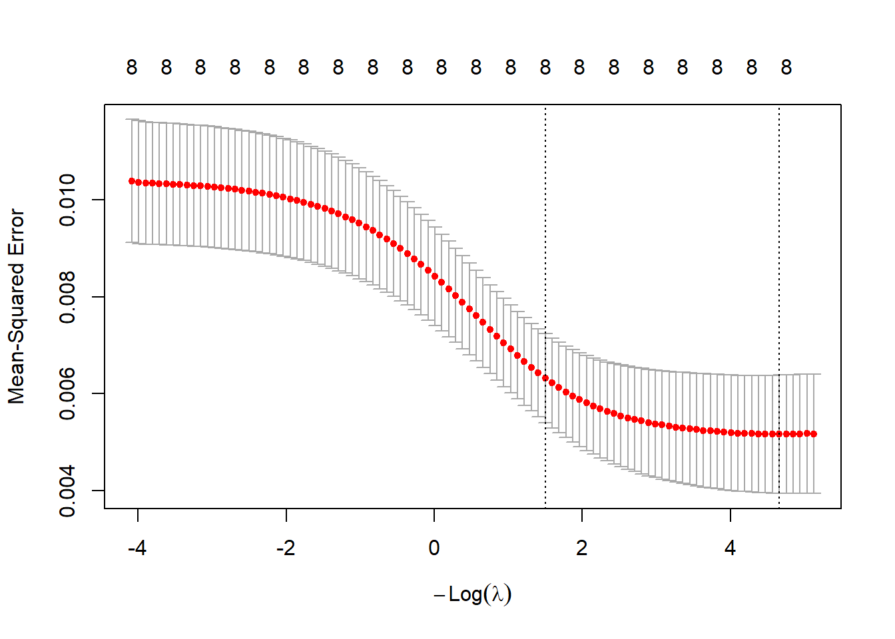
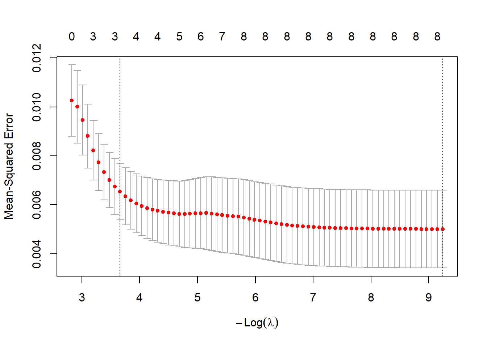
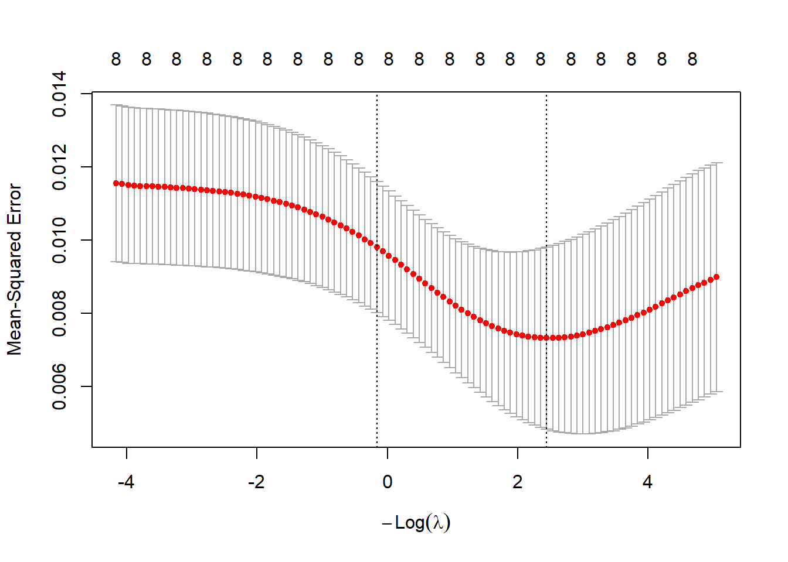
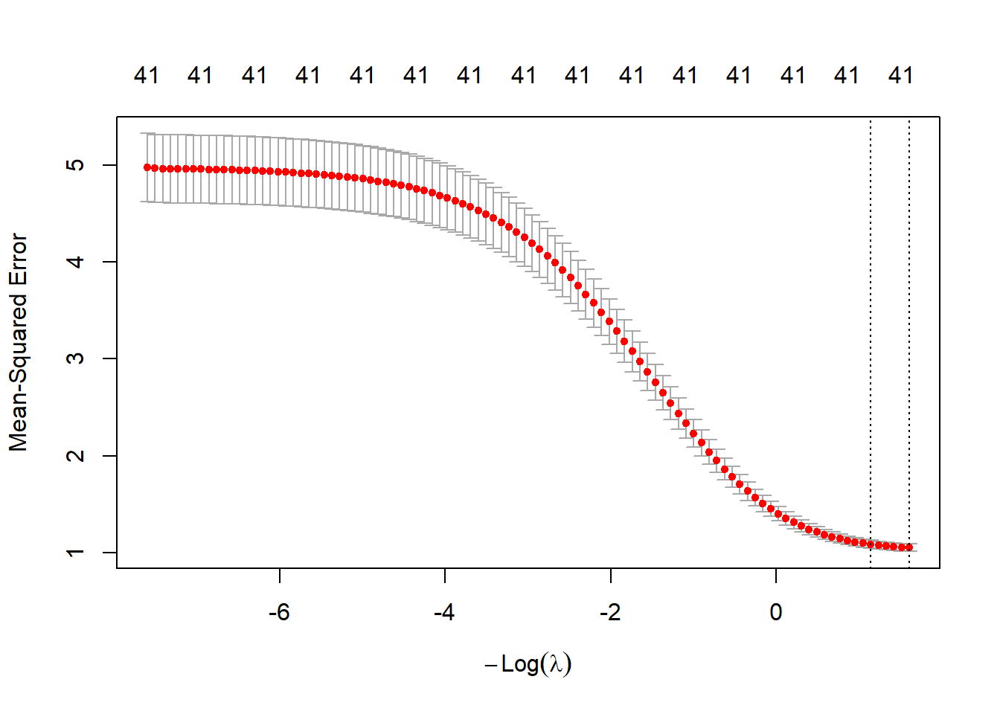
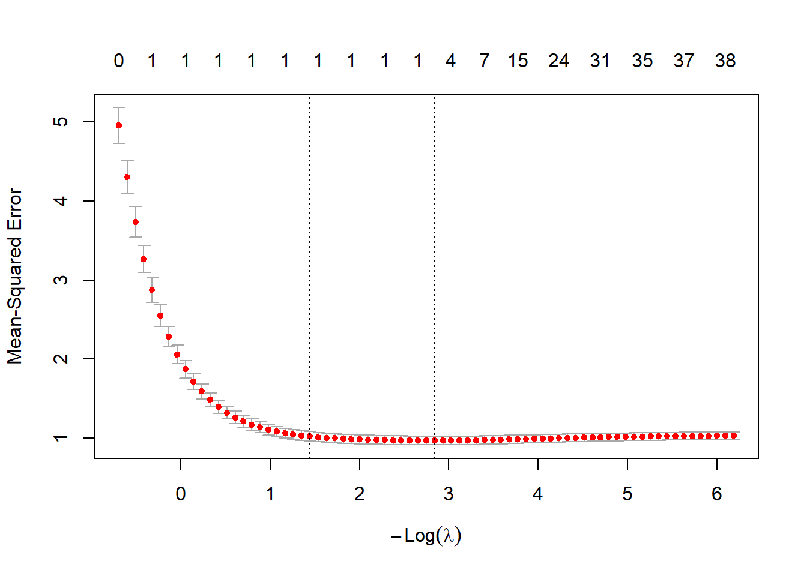

library(glmnet)
df_url="https://raw.githubusercontent.com/jmayberr/math133-stat-learning-fall2026/refs/heads/main/Datasets/election2016.csv"
election2016=read.csv(df_url)Module 4.3: Regularization
Introduction
Module 4.2 discussed variable selection methods that use either parameter adjusted penalties (Cp, BIC, etc) or cross validation to determine optimal models. In general, these are all “subset selection” methods and the only difference between them is the criteria used to select between linear models with different numbers of features. Regularization (also called shrinkage) methods, in contrast, create a penalty for large coefficients in linear models and hence “shrink” the size of estimated coefficients from the get go. We shall discuss the two most common shrinkage methods in these notes: Ridge and LASSO regression. After, we’ll combine them both into a class of models called elastic net and show how to train them using the glmnet package.
Ridge vs LASSO: Theory
To understand shrinkage methods, let’s first recall the ordinary least squares (henceforth OLS) method for estimating coefficients in a simple linear model: we choose a vector of \(p+1\) coefficients \(\hat{\beta} = (\hat{\beta}_0,\hat{\beta}_1,...,\hat{\beta}_p)^T\) such that the resulting prediction \(\hat{y} =X\hat{\beta}\) minimizes the sum of squared errors \[ SSE = \sum (y_i - \hat{y}_i)^2. \] or equivalently, \(MSE = RSS/n\).
The concept of norms can greatly ease the notation involved in representing regression penalty functions. Given a vector \(x=(x_1,...,x_n)^T\), its \(\ell_2\)-norm is defined as its (physics) magnitude \[ \|x\|_2 = \left(\sum_{i=1}^n x_i^2\right)^{1/2} \] In contrast, the \(\ell_1\)-norm is the sum of the absolute values of its components
\[ \|x\|_1 = \sum_{i=1}^n |x_i| \]
The \(\ell_1\)-norm is often called the “taxicab distance” because it measures the distance you would have to travel to get to \(x\) if you could only travel at right angles (like on a city grid) from the origin.
With the norm notation, we can rewrite MSE in terms of the \(\ell_2\)-norm of the residuals
\[ MSE = \frac{1}{n} \| y-\hat{y} \|_2^2 \]
Ridge and lasso (LASSO = least absolute shrinkage and selection operator) regression both add penalties to the RSS for large parameters, but how they quantify largeness differs. Ridge uses the \(\ell_2\)-norm; lasso uses the \(\ell_1\)-norm. Each has a hyper-parameter \(\lambda\), called the tuning parameter, which decides how much weight to put on the size of the coefficients. More specifically, ridge regression attempts to minimize the function1 \[ \frac{1}{2}MSE + \lambda \|\beta\|_2^2 \] while lasso tries to minimize \[ \frac{1}{2} MSE + \lambda \|\beta\|_1. \] Note that in both methods, the intercept \(\beta_0\) is excluded from the penalty because this coefficient has nothing to do with the relationship of our response to the predictors, but rather the average value of our response in the absence of any predictors. Also note that both ridge and lasso regression assume that all predictors are standardized2 so that their coefficients are being calculated on the same scale and are not dependent on the predictors’ units.
As mentioned above, the tuning parameter \(\lambda\) describes how much weight to place on the coefficient sizes. When \(\lambda=0\), both ridge and lasso become ordinary least squares (the fit obtained in lm). Choosing the “right” lambda is usually done based on cross-validation:
- Choose a grid of \(\lambda\) values and fit a model with each.
- Compute the cross-validation MSE (or RMSE) for each value of \(\lambda\) and compare.
This is the process of “hyperparameter tuning” earlier stated as a second major goal of this section. Yay, we did it. We will demonstrate with an example below.
Ridge Model fit in R
The glmnet package contains a core function for implementing both ridge and lasso regression. Let’s start by loading this package along with the election2016 dataset
The primary function in glmnet is called…wait for it…glmnet and has four inputs: a matrix of predictors, a vector of responses, a value of “alpha”, and a grid of values to use for lambda cross-validation (the last of which you can usually leave off and let it default to choosing 100 lambdas). What is alpha you might ask? Well, glmnet actually can implement ridge/lasso hybrids (called Elastic Net) which minimizes \[ \frac{1}{2} MSE + \lambda\left[ \alpha \|\beta\|_1 + \left(\frac{1-\alpha}{2}\right) \|\beta\|_2^2 \right] \] for any value of \(\alpha\) between 0 and 1. When \(\alpha=0\), we get Ridge and when \(\alpha = 1\), we get Lasso. Taking \(\alpha = 1/2\) would lead to an equal mixture of the two.In practice, you can also tune \(\alpha\) \(\lambda\) using cross-validation, which we’ll demonstrate in the next section. In these notes we’ll stick to lasso and ridge.
Let’s start with applying ridge to the election2016 data. The format of glmnet is a little different because you have to input the outcome as a vector and the predictors as a matrix. The best way to do this in the right format is to first define your formula and then pass it to model.matrix (the “-1” removes the intercept because glmnet adds it automatically)
y=election2016$trump.vote
predictors = names(election2016)[2:9]
formula = reformulate(predictors,response="trump.vote")
X=model.matrix(formula,data=election2016)[,-1]Now we’ll run glmnet with \(\alpha = 0\) (corresponding to ridge). Note that glmnet automatically standardizes all the predictors prior to the fit so you don’t have to worry about that.
ridge.mod=glmnet(X,y,alpha=0)The ridge.mod object stores the estimated coefficients in Ridge regression models for 100 different values of \(\lambda\). It chooses them equally spaced on a logarithmic scale from about \(e^{-5}\) to \(e^4\). You can see the largest by
ridge.mod$lambda[1][1] 59.3588and the smallest by
ridge.mod$lambda[100][1] 0.00593588The ridge.mod object stores 100 different models, one for each value of \(\lambda\) The coefficients for these models are stored as columns in the coef matrix. Furthermore, even though the variables were standardized prior to fitting the model, the coefficients are returned on the original scale of the variables. The code below shows how to extract the coefficients for the first and last models, which correspond to the largest and smallest values of \(\lambda\) respectively:
coef(ridge.mod)[,c(1,100)]9 x 2 sparse Matrix of class "dgCMatrix"
s0 s99
(Intercept) 4.990000e-01 2.534829e+00
median.income -6.624889e-42 -5.163246e-06
unemployed -2.629490e-37 -9.897817e-01
metro -3.189146e-37 -1.041906e-01
high.school -5.327744e-37 -1.042639e+00
non.citizen -1.958755e-36 -5.648079e-01
white.pov 2.082825e-36 -6.638636e-01
income.ineq -9.804036e-37 -1.292282e+00
non.white -2.681367e-37 -1.446864e-01Notice that the coefficients for large lambda (column 1) are orders of magnitude smaller than the coefficients for small lambda. You can also compare their \(\ell_2\)-norms and see that the smaller value of \(\lambda\) gives much larger coefficients.
c(sum(coef(ridge.mod)[,1]^2),sum(coef(ridge.mod)[,100]^2))[1] 0.249001 10.953628Luckily, the predict function works with the output of glmnet as well. The only weirdness is that you have to specify which lambda to use by “s=…”. For example, if we want to predict trump.vote for the first five states in our dataset using the largest value of \(\lambda\), we use
predict(ridge.mod,s=ridge.mod$lambda[1], newx=X[1:5,]) s=59.3588
1 0.499
2 0.499
3 0.499
4 0.499
5 0.499Notice that with this large value of \(\lambda\), the predictions are dominated by the intercept because the coefficients have been shrunk so much. We could say that this model has high bias, but low variance. In contrast, using the smallest value of \(\lambda\):
predict(ridge.mod,s=ridge.mod$lambda[100], newx=X[1:5,]) s=0.00593588
1 0.5829050
2 0.4351506
3 0.4713758
4 0.5886517
5 0.3925948There is more variability in predictions (and less bias).
One can also perform \(k\)-Fold cross validation to obtain an optimal lambda using the cv.glmnet function (nfolds is the “k” from our previous work):
cv.ridge=cv.glmnet(X,y,alpha=0,nfolds = 10)
plot(cv.ridge)
So the optimal value of \(\lambda\) appears to be on the smaller side ( below \(log \lambda \approx -4\). The first dashed line3 on the left displays the minimum and the exact value can be found using the lambda.min command
cv.ridge$lambda.min[1] 0.0094516Now we can go back and use the minimum value of \(\lambda\) to refit our model
ridge.opt=glmnet(X,y,lambda = cv.ridge$lambda.min,alpha=0)
coef(ridge.opt)9 x 1 sparse Matrix of class "dgCMatrix"
s0
(Intercept) 2.324644e+00
median.income -4.761237e-06
unemployed -8.805535e-01
metro -1.034573e-01
high.school -9.253759e-01
non.citizen -5.793354e-01
white.pov -4.721838e-01
income.ineq -1.161299e+00
non.white -1.318266e-01Standardized Coefficients and Variable Importance
Unlike ordinary least squares (OLS), there are no standard significance tests (e.g., p-values) for assessing feature importance in ridge regression. Instead, variable importance is typically evaluated by examining the magnitude of the fitted coefficients. It is tempting to interpret the size of the resulting coefficients directly, but doing so can be misleading because variables with different units may have coefficients on different scales4. Instead, if we want to say something about which variables the model considers most important, we SHOULD actually look at standardized coefficients.
To see how to convert between the two, consider the simple linear model \[ Y = \beta_0 + \beta_1 X_1 + \varepsilon \] We can standardize \(X\) by adding and subtracting its mean and multiplying/dividing by its sample standard deviation \(s_x\): \[ \beta_0 + \beta_1 (X_1-\bar{x}+\bar{x})(\frac{s_x}{s_x}) = \tilde{\beta}_0 + \tilde{\beta_1} Z_x \] where \(\tilde{\beta_1} = s_x \beta_1\). In other words, the standardized coefficient of \(X_1\) is the unstandardized coefficient multiplied by the standard deviation.
The case for multiple regression is similar with the standardized coefficient of variable \(j\) being given by \[ \tilde \beta_j = s_{x_j} \beta_j \] To compute them in R, first get the sample standard deviations using the apply function
s=apply(X,2,sd)Then multiply by the corresponding coefficients in ridge.opt
coef(ridge.opt)[-1]* s # -1 takes out teh interceptmedian.income unemployed metro high.school non.citizen
-0.043371629 -0.009254647 -0.018607336 -0.031849682 -0.017913762
white.pov income.ineq non.white
-0.011248586 -0.020706273 -0.021131576 Now THESE numbers are comparable. After sorting by absolute value, we can see that median.income had the largest standardized coefficients (sometimes referred to as effect sizes) followed by high.school, non.white, and income.ineq.
std_coef=coef(ridge.opt)[-1]* s
sort(abs(std_coef), decreasing = TRUE)median.income high.school non.white income.ineq metro
0.043371629 0.031849682 0.021131576 0.020706273 0.018607336
non.citizen white.pov unemployed
0.017913762 0.011248586 0.009254647 LASSO model fit
To alternatively fit a lasso model, we just need to use \(\alpha=1\) instead in our call to glmnet. For example, here are the CV errors for lasso models with different \(\lambda\)’s:
cv.lasso=cv.glmnet(X,y,alpha=1,nfolds = 10)
plot(cv.lasso)
The numbers at the top tell you how many parameters are nonzero in the Lasso model. The optimal model coefficients are
lasso.opt=glmnet(X,y,lambda = cv.lasso$lambda.min,alpha=1)
coef(lasso.opt)9 x 1 sparse Matrix of class "dgCMatrix"
s0
(Intercept) 3.045777e+00
median.income -6.102603e-06
unemployed -1.230517e+00
metro -1.072625e-01
high.school -1.332654e+00
non.citizen -5.019515e-01
white.pov -1.143633e+00
income.ineq -1.604293e+00
non.white -1.793518e-01Lasso chose a five variable model as optimal. If we compare the mean cross-validation errors for the optimal ridge and lasso models, they are almost identical:
cat("CV ridge = ",min(cv.ridge$cvm),"\nCV lasso = ",min(cv.lasso$cvm))CV ridge = 0.005161342
CV lasso = 0.005004179So it looks like both lasso and ridge found equally “good” models from a prediction perspective.
Note that if you use a higher lambda (for example the 1se value), lasso drops additional terms and ends up with the three variable model from 4.2.
lasso.opt2=glmnet(X,y,lambda = cv.lasso$lambda.1se,alpha=1)
coef(lasso.opt2)9 x 1 sparse Matrix of class "dgCMatrix"
s0
(Intercept) 7.262309e-01
median.income -2.792117e-06
unemployed .
metro -5.930618e-02
high.school .
non.citizen -5.798846e-01
white.pov .
income.ineq .
non.white . From Model to Predictions: Start to finish
I’ll give you that the previous sections are a bit convoluted if you just want the instruction manual of “how do I fit this shit”. You’ll probably recognize by now that I prefer a good story to a manual, but the latter has its place. So here is a more thoroughly worked out example of how we do a 60-40 training/testing split, tune for lambda in a ridge model (its similar for lasso except use alpha = 1), calculate predictions, and check the RMSE of the model on our test set
# Load package
library(glmnet)
# Training-Testing Split
set.seed(44)
p=0.6 # Fraction for training set
n=nrow(election2016)
s=sample(n,round(p*n))
train=election2016[s,]
test=election2016[-s,]
# Model matrices and outcome
predictors = names(election2016)[2:9]
formula = reformulate(predictors,response="trump.vote")
X_train=model.matrix(formula,train)[,-1]
X_test=model.matrix(formula,test)[,-1]
y_train=train$trump.vote
y_test=test$trump.vote
# Find minimal cross validation error model
ridge_cv=cv.glmnet(X_train,y_train,alpha=0)
plot(ridge_cv)
cat("Best lambda =",ridge_cv$lambda.min,"\n")Best lambda = 0.08690804 # Build and view coefficients in final model
ridge_best=glmnet(X_train,y_train,lambda=ridge_cv$lambda.min,alpha=0)
coef(ridge_best)9 x 1 sparse Matrix of class "dgCMatrix"
s0
(Intercept) 1.246938e+00
median.income -2.276298e-06
unemployed -1.140460e+00
metro -8.516417e-02
high.school -2.327344e-01
non.citizen -5.293952e-01
white.pov 3.196627e-01
income.ineq -6.565793e-01
non.white -3.961335e-02# Variable Importance
s=apply(X_train,2,sd)
coefs=sort(abs(coef(ridge_best)[-1]*s),decreasing = TRUE)
print("Absolute Value of Standardized Coefficients:")[1] "Absolute Value of Standardized Coefficients:"coefsmedian.income metro non.citizen income.ineq unemployed
0.021237808 0.017017384 0.016817739 0.012417499 0.011589830
high.school white.pov non.white
0.008439244 0.008299069 0.005664544 # Predict and check Test RMSE
yhat=predict(ridge_best,newx=X_test)
cat("RMSE of Best Ridge =",sqrt(mean((yhat-y_test)^2)))RMSE of Best Ridge = 0.06596271Note that we run cv.glmnet on the training set only. Using the full dataset would leak test information into our lambda selection and give an overly optimistic estimate of performance. Let’s compare with the best OLS model from the last notes (with three predictors)
trump_lm_best=lm(trump.vote~median.income+income.ineq+non.citizen,data=train)
yhat=predict(trump_lm_best,test)
cat("RMSE of best OLS =",sqrt(mean((yhat-y_test)^2)))RMSE of best OLS = 0.05656374Interesting, OLS did better! Haha, proves that ridge is a fucking waste of time, right?
Ridge vs Lasso: General Comments
Alright, not fully of I wouldn’t waste your time with it. I highly encourage you to read Secton 6.2.2 of the ISLR book for a full discussion on the topic of lasso vs ridge vs ols, but if you want the brief “CliffsNotes”” version:
- Lasso is better at picking out a small number of significant variables (the signal) mixed in with a large number of insignificant ones (the noise).
- Ridge is better at minimizing error when a large number of variables are actually significant.
- Lasso leads to more interpretable models since it tends to “zero out” more coefficients
- Ridge can lead to reduced variance in models with a large number of significant parameters and hence, may be better for prediction in such scenarios.
- OLS is just as good as either in most other scenarios.
These are not hard and fast rules so when possible, it is always best to fit multiple models and compare the results on a test set, but we can see a few of the above features popping up in the previous example. For example, compare the two cross-validation plots from the previous sections. All the best ridge models include all eight variables, but lasso includes some pretty comparable models with only three variables (for example, the 1se model shown earlier). Thus, lasso models can indeed be more “interpretable”.
As another example of an advantage of lasso, suppose that we generate fake data in which there is only one significant variable in a sea of 40 meaningless ones
fake=data.frame(replicate(41,rnorm(1000)))
names(fake) = paste0("x",1:41)
fake$y=1+2*fake$x21+rnorm(1000,sd=1)Now if you run ridge, the MSE levels off at 41 variable models:
y=fake$y
X=model.matrix(y~.,data=fake)
cv.ridge=cv.glmnet(X,y,alpha=0,nfolds = 10)
plot(cv.ridge)
But if you run LASSO, we can see the MSE is pretty much the same up until we get to 1 variable models:
cv.lasso=cv.glmnet(X,y,alpha=1,nfolds = 10)
plot(cv.lasso)
This shows how lasso can be better at finding a “needle in the haystack”.
On the other hand, ridge deals better with correlated predictors. For example, suppose that our fake data this time has only two predictors that are highly correlated with the same coefficient:
N = 100
x1 = runif(N)
x2 = x1 + rnorm(N, sd = 0.05)
y = x1 + x2 + rnorm(N)
df=data.frame(x1=x1,x2=x2,y=y)Lasso gets the coefficient estimates wrong and places too much weight on one of the two:
X=matrix(c(x1,x2),nrow=N,ncol=2)
fake_lasso=cv.glmnet(X,y,alpha=1)
coef(fake_lasso,s=fake_lasso$lambda.min)3 x 1 sparse Matrix of class "dgCMatrix"
s=0.01364724
(Intercept) 0.2285919
V1 1.5113405
V2 . Ridge does a better job:
fake_ridge=cv.glmnet(X,y,alpha=0)
coef(fake_ridge,s=fake_ridge$lambda.min)3 x 1 sparse Matrix of class "dgCMatrix"
s=0.1889988
(Intercept) 0.2823328
V1 0.7935931
V2 0.6210358Point for Ridge.
Practice
Recall that the Credit dataset from Practice Problem 2.2 contains simulated data on customer credit card balance based on several predictors including income, limit, rating, cards, age, education, own, student, married, and region.
- Split the data into training-testing sets using a 70-30 split and
set.seed(44)for reproducibility. - Find the optimal ridge model for the training using 10-fold cross-validation.
- Find the optimal lasso model for the training using 10-fold cross-validation.
- Compare the test RMSE for both fits. Which is better?
- Compare standardized coefficients for both models. Which variables were the most important for predicting Balance? How does the variables importance ranking compare with the significant variables from 2.2 and selected features in 4.2?
Footnotes
The 1/2 is not important as you can always rescale \(\lambda\), but the R documentation and most descriptions of this include it so I left it in too. The main reason is because the more general version uses log-likelihoods and the log likelihood of a normal distribution has a 1/2 in there.↩︎
I mentioned this idea earlier with KNN too. Standardizing usually means you convert each column to z-scores by subtracting the mean (centering) and dividing by the standard deviation (scaling).↩︎
The second dashed line shows the largest lambda within one standard error of the minimum and can be found using cv.ridge$lambda.1se. This value is good to use if you want more regularization since higher lambda leads to a “simpler” model with smaller coefficients↩︎
Recall I said that glmnet standardizes to fits but reports coefficients as unstandardized. Keep up!↩︎